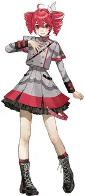

Касане Тето - виртуальная певица, созданная в Японии. Изначально была разработана как шутка к 1 апреля в 2008 году на японском форуме 2channel, но позже стала полноценным войсбанком.
В 2008 году группа пользователей форума 2channel разработала план создания поддельного персонажа-вокалоида. Имя, причёска, пол, возраст, симпатии, антипатии, особые навыки и другие черты характера были выбраны случайным образом из предложений пользователей и объединены в одного персонажа для розыгрыша на 1 апреля.
